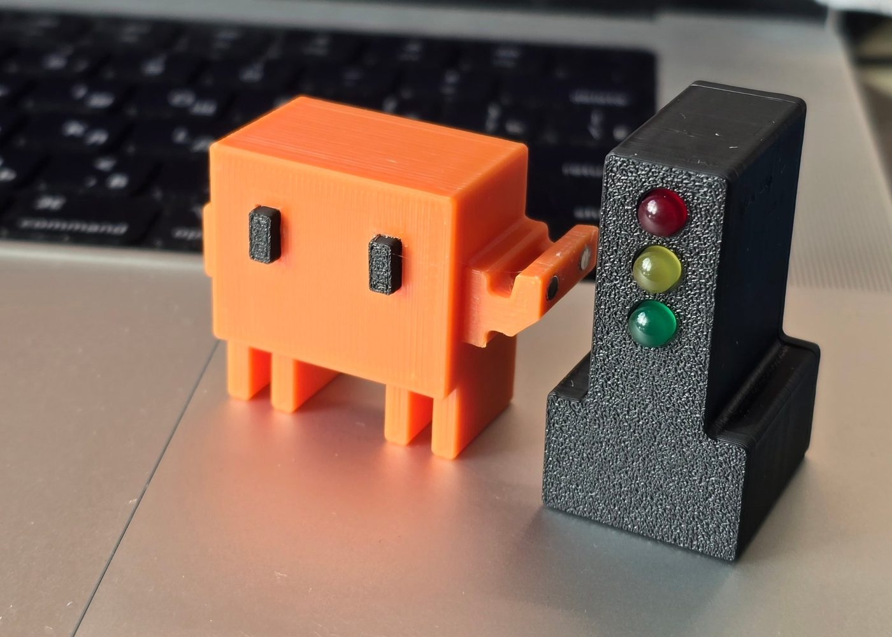
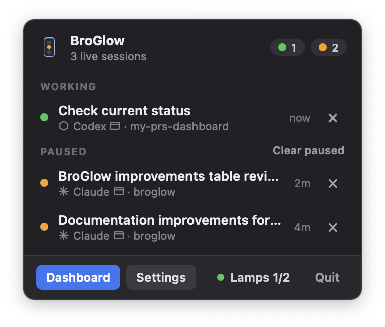
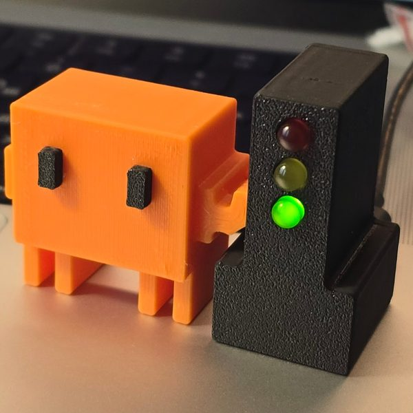
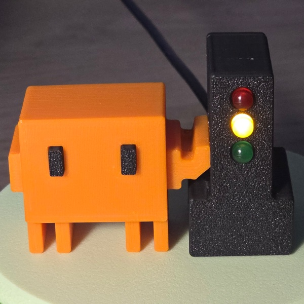
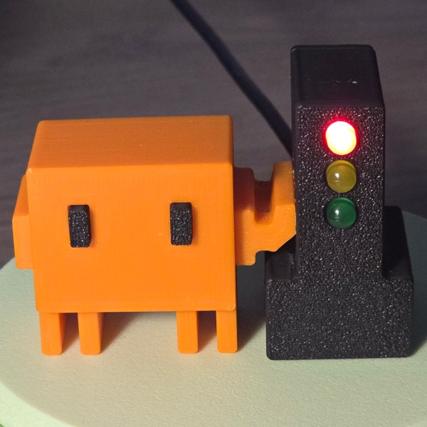

Your agent. At a glance.
Fewer tabs.
More clarity.
A small traffic light on your desk shows what your coding agent is doing: working, waiting, or asking for your attention.
Build your BroGlow
Red always takes priority. When some sessions are working and others are paused, you choose which color wins in BroGlow settings; by default, any paused session turns the lamp yellow.
Loading 3D…
3D could not load; the photo shows the selected signal. Try again.
Drag or use arrow keys to rotate. Pinch, scroll, or use Page Up / Page Down to zoom.
For real-size AR, open in Safari on iPhone/iPad or a supported Android browser.
- Claude Code
- Codex
- opencode
- GitHub Copilot CLI
Power nearby. Status by Bluetooth or USB.
A lamp on your desk.
Your agents on your Mac.
BroGlow combines your session statuses and sends them to the lamp over Bluetooth on macOS, or over the USB cable on macOS and Windows. The lamp is powered over USB.
- Bluetooth LE
- Direct link to your Mac (macOS only)
- USB
- Power; also a status link on macOS and Windows
- No Wi-Fi
- The lamp needs no network or cloud
What the colors mean
Three LEDs.
One glance.
The lamp mirrors all your local sessions at once: green while an agent is working, yellow when a session has finished its turn and waits for you, red when an agent asks a question or needs a permission.


GreenAn agent is working
YellowA session waits for you
RedAn agent needs your answer
Explore the assembly
Drag or use arrow keys to rotate. Pinch, scroll, or use Page Up / Page Down to zoom.
Loading 3D…
The assembly could not load. Try again or open the setup guide.
A weekend build.
A real device on your desk.
An ESP32-C3 SuperMini board, three LEDs, one resistor per LED and a printed enclosure. The mascot holds on by magnets: two Ø3×2 mm N52 in the mascot, two in the traffic light. Pull it off, put it back, or swap in any mascot you like, any time.
- 01Gather the parts
An ESP32-C3 SuperMini board, three LEDs and resistors, four magnets and the print package from the build guide.
- 02Wire and flash the board
Wire the LEDs and flash the firmware by following the build guide.
- 03Install BroGlow
brew install broglow/tap/broglow, then the requiredbroglow install: it registers the hooks in your coding agent (Claude Code, Codex, opencode, Copilot CLI) and starts the menu bar app. Details: installation guide. - 04Connect your lamp
Plug one flashed lamp into your Mac by USB. BroGlow sets it up automatically, pairs it over Bluetooth and remembers it. To retry, use Lamps → Add lamp. On Windows, the lamp works over USB.